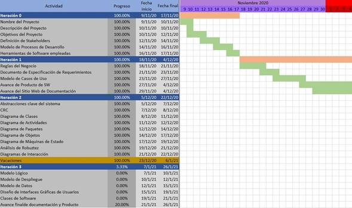

La metodología que utilizaremos será Iterativo Incremental ya que la naturaleza del sistema demanda que se utilicen varias iteraciones por la cantidad de tareas que se deben realizar, de las cuales cada una incrementará la funcionalidad total del sistema.
